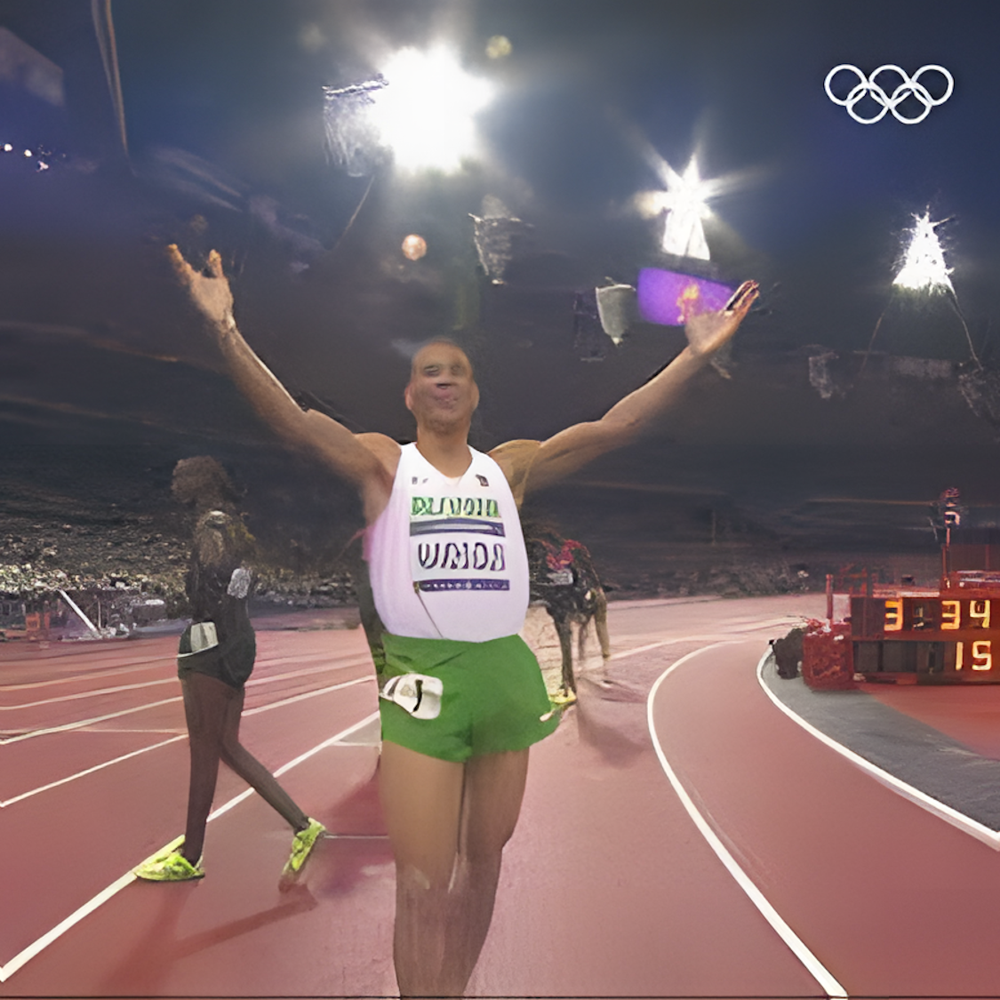
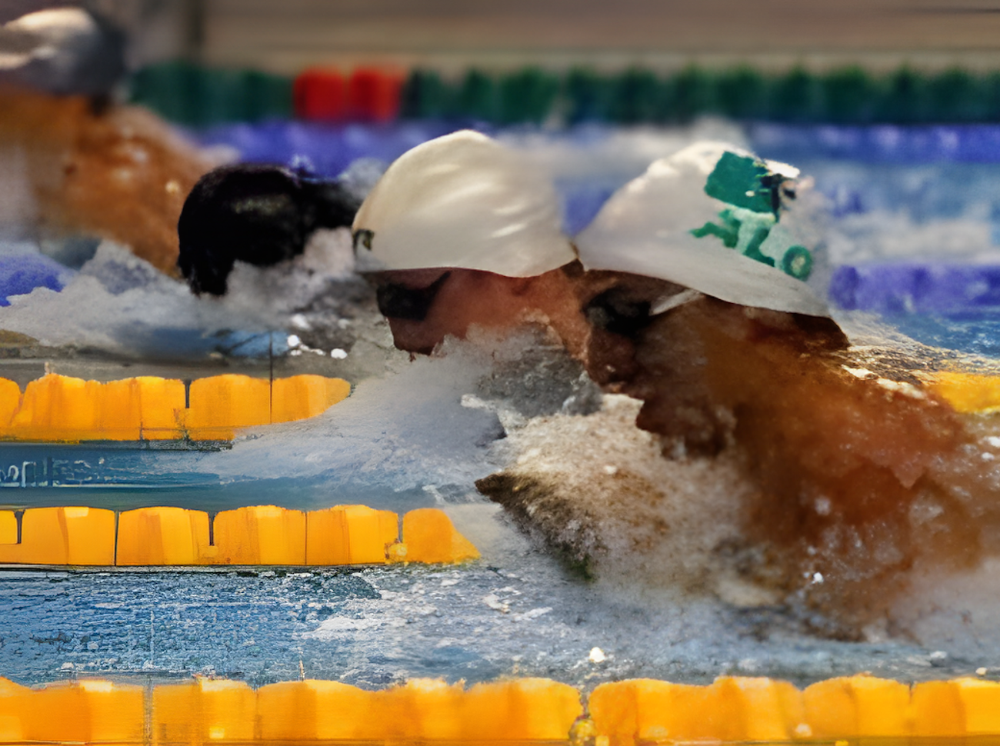
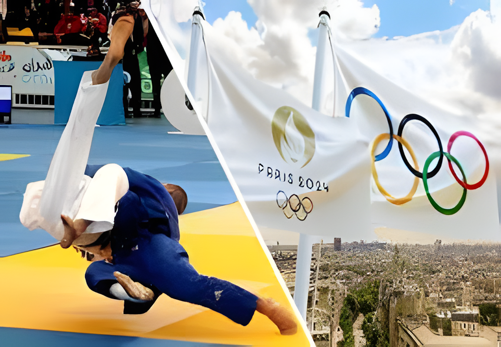

ATHLÉTISME
Cathlétisme est une discipline phare des Olympiados.
II regroupe des épreuves de course, de saut et de lancer
Les athlétes démontrent itesse, endurance et puissance.
Cest run dos sports Ies plus suivis par Ie public

NATATION
La natation développe force et technique. Les oompåtitions déroulent en bassin otympiquo. Les nageurs rivalisent en vitesse et en endurance. Cest un sport complet qui attire de nombreux spectateurs. GYMNASTIQUE La gymnastique allie souplesso et précision artistiquo. Ello oomprend des épreuves au SOI et aux agrés, Les gymnastes réalisent des mouvements spectaculaires. Ce sport mot en valour ta gråce ot Ia discipline.

GYMNASTIQUE
La gymnastique allie souplesso et précision artistiquo. Ello oomprend des épreuves au SOI et aux agrés, Les gymnastes réalisent des mouvements spectaculaires. Ce sport mot en valour ta gråce ot Ia discipline.